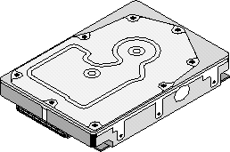
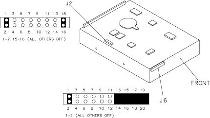
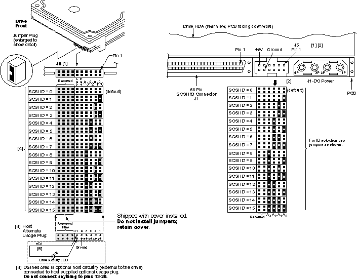
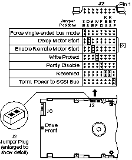
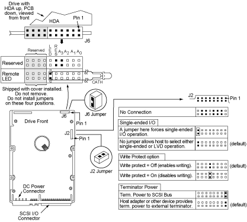
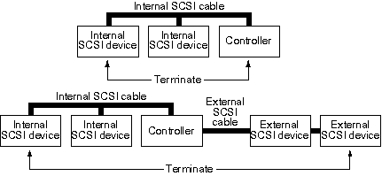
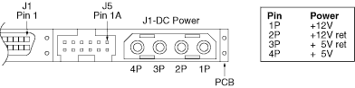

Operating Documentation
Direction 5114043-800, Rev# 9
LightSpeed 3.X Service Methods (Advanced)
Operating Documentation |
If you have a need for further information, please visit Seagate’s WEB site at www.seagate.com
Illustration 1: Scan Data Disk Drive

Seagate P/N ST318452
| Removal of circuit boards by personnel not performing depot repair will damage components. | |
All drive electronic assemblies are sensitive to static electricity, due to the electrostatically sensitive devices used within the drive circuitry. Although some devices such as metal-oxide semiconductors are extremely sensitive, all semiconductors, as well as some resistors and capacitors, may be damaged or degraded by exposure to static electricity.
Disk drives are fragile. Do not drop or jar the drive. Handle the drive only by the edges or frame.
During installation, turn off the power to the host system.
When operating the drive, always use forced-air ventilation.
When troubleshooting a unit that has voltages present, use caution.
Do not disassemble the drive. Doing so voids the warranty.
If any part is defective, return the entire drive for depot service.
Do not apply pressure or attach labels to circuit board or drive top.
For Safety and Regulatory Agency Specifications, see Seagate part number 75789512.
Set your SCSI Disk as shown in Illustration 2.
Illustration 2: Scan Data Disk - GE Specific Settings

The scan data drive must be configured as shown in Illustration 2. The following information is provided for reference only.
Illustration 3 shows a view of the drive’s ID select jumper connectors (at left) and the drive’s J5-auxiliary jumper connector (at right). Both J5-auxiliary and J6 have pins for selecting drive ID and for connecting a remote LED cable. Only one or the other should be used, although using both at the same time will not damage the drive.
Illustration 3: Scan Data Disk - SCSI Jumpers

Figures Illustration 4 and Illustration 5 show the option select jumper headers.
Illustration 4: Scan Data Disk (J2 Header) Option Jumpers- ST318451

Illustration 5: Scan Data Disk (J2 Header) Option Jumpers- ST318452 (rt)

ST318451LW and ST318452LW drives do not have internal terminators or any other way of adding internal termination to the drive. External termination is required.
The example in Illustration 6 shows an internal hard disc at one end of the SCSI bus with the SCSI controller at the other end (both are terminated). The bottom example shows two additional SCSI devices connected externally-this means the SCSI controller is no longer on the end of the SCSI chain and should not be terminated.
Illustration 6: Typical SCSI bus Termination

Illustration 7: DC power connector
